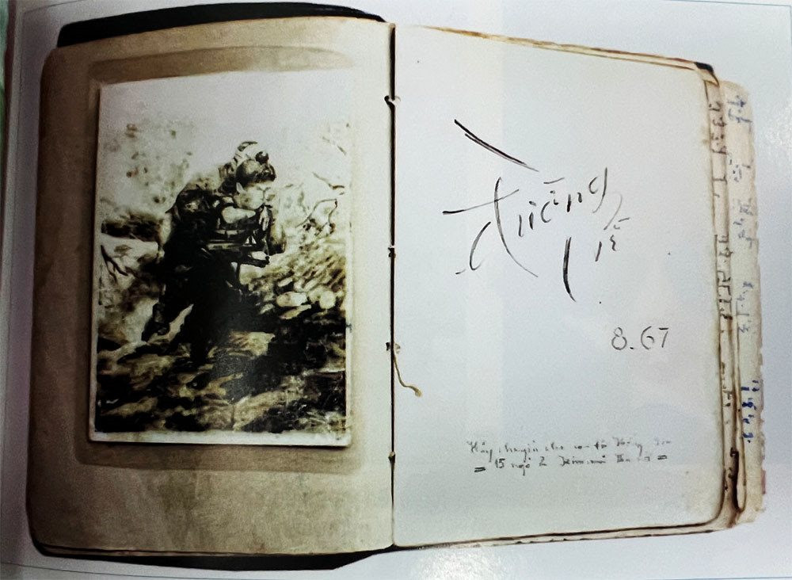

Trung tâm Thông tin - Thư viện phối hợp cùng Nhà xuất bản Giáo dục Việt Nam chính thức ra mắt bộ sách “Lịch sử Việt Nam bằng hình” nhằm mang đến cho bạn đọc một góc nhìn trực quan, sinh động và dễ tiếp cận hơn về lịch sử dân tộc.
Bộ sách được biên soạn công phu với hàng trăm hình ảnh tư liệu quý, tranh minh họa và sơ đồ lịch sử được chọn lọc kỹ lưỡng. Đây được xem là một trong những dự án xuất bản có giá trị học thuật và giáo dục cao, góp phần lan tỏa tình yêu lịch sử đến thế hệ trẻ.

Không gian trưng bày bộ sách “Lịch sử Việt Nam bằng hình” tại Thư viện PTIT.
Điểm nổi bật của bộ sách
Khác với nhiều đầu sách lịch sử truyền thống, bộ sách lần này tập trung khai thác yếu tố hình ảnh nhằm giúp người đọc dễ dàng hình dung các giai đoạn, sự kiện và nhân vật lịch sử quan trọng của Việt Nam.
- Hơn 500 hình ảnh tư liệu quý được sưu tầm từ nhiều nguồn uy tín.
- Thiết kế hiện đại, trực quan giúp việc tiếp cận kiến thức lịch sử trở nên dễ dàng hơn.
- Nội dung ngắn gọn, dễ hiểu phù hợp với học sinh, sinh viên và bạn đọc trẻ.
- Kết hợp infographic và sơ đồ tư duy giúp ghi nhớ thông tin hiệu quả.
“Lịch sử không chỉ là những con số hay sự kiện khô khan, mà còn là hành trình dựng nước và giữ nước đầy tự hào của dân tộc Việt Nam.”
Lan tỏa tình yêu lịch sử tới giới trẻ
Đại diện Ban tổ chức cho biết việc ra mắt bộ sách nhằm góp phần đổi mới phương pháp tiếp cận lịch sử đối với học sinh, sinh viên trong bối cảnh chuyển đổi số giáo dục hiện nay.
Thông qua hình ảnh minh họa trực quan, bạn đọc có thể dễ dàng tiếp cận các giai đoạn lịch sử quan trọng như:
- Thời kỳ dựng nước Văn Lang - Âu Lạc.
- Các cuộc kháng chiến chống ngoại xâm.
- Những dấu mốc quan trọng của lịch sử cận đại.
- Quá trình xây dựng và phát triển đất nước hiện đại.
Hoạt động trưng bày và giới thiệu sách
Trong khuôn khổ sự kiện, Thư viện tổ chức không gian trưng bày chuyên đề nhằm giới thiệu các ấn phẩm nổi bật của bộ sách đến đông đảo bạn đọc. Sinh viên có thể trực tiếp tham quan, đọc thử và tìm hiểu nội dung sách tại khu vực triển lãm tầng 1.
Ngoài ra, chương trình còn có nhiều hoạt động giao lưu thú vị như:
- Talkshow chia sẻ về phương pháp học lịch sử hiệu quả.
- Mini game tìm hiểu kiến thức lịch sử Việt Nam.
- Check-in nhận quà lưu niệm từ chương trình.
- Giao lưu cùng các tác giả và nhóm biên soạn sách.
Sinh viên tham quan khu vực trưng bày sách và tư liệu lịch sử.
Ứng dụng công nghệ số trong xuất bản lịch sử
Bên cạnh phiên bản in truyền thống, bộ sách “Lịch sử Việt Nam bằng hình” còn được tích hợp nhiều nội dung số hiện đại nhằm nâng cao trải nghiệm đọc và học tập cho sinh viên, học sinh và bạn đọc trẻ.
Một số trang sách được gắn mã QR giúp người đọc có thể truy cập nhanh tới:
- Video tư liệu lịch sử và phim tài liệu ngắn.
- Hình ảnh 3D phục dựng các công trình, di tích lịch sử.
- Timeline tương tác về các sự kiện quan trọng của dân tộc.
- Kho dữ liệu số phục vụ học tập và nghiên cứu.
Đại diện nhóm biên soạn cho biết việc kết hợp công nghệ số vào xuất bản là xu hướng tất yếu nhằm tạo ra trải nghiệm học tập trực quan, sinh động và phù hợp với thế hệ độc giả trẻ hiện nay.
“Lịch sử cần được kể lại bằng ngôn ngữ gần gũi với thế hệ trẻ, nơi hình ảnh, công nghệ và cảm xúc cùng góp phần truyền tải giá trị dân tộc.”
Phản hồi tích cực từ sinh viên
Ngay trong ngày đầu tiên ra mắt, khu vực trưng bày sách đã thu hút đông đảo sinh viên tới tham quan và tìm hiểu. Nhiều bạn đánh giá cao cách trình bày trực quan, hiện đại cũng như khả năng tiếp cận kiến thức lịch sử một cách nhẹ nhàng hơn.
Bạn Nguyễn Minh Anh – sinh viên ngành Công nghệ thông tin chia sẻ:
“Trước đây mình thường cảm thấy lịch sử khá khó nhớ vì có nhiều mốc thời gian. Nhưng bộ sách này trình bày bằng hình ảnh và sơ đồ nên dễ tiếp cận hơn rất nhiều. Đặc biệt phần infographic giúp mình ghi nhớ nhanh hơn khi ôn tập.”
Không chỉ phục vụ nhu cầu đọc giải trí và tìm hiểu lịch sử, bộ sách còn được đánh giá là nguồn tài liệu tham khảo hữu ích cho các môn học liên quan đến lịch sử, văn hóa và giáo dục công dân.
Vai trò của thư viện trong phát triển văn hóa đọc
Trong những năm gần đây, Thư viện PTIT liên tục đổi mới không gian học tập, bổ sung nhiều nguồn tài nguyên số và tổ chức các hoạt động khuyến đọc nhằm xây dựng môi trường học thuật hiện đại cho sinh viên.
Các chương trình giới thiệu sách chuyên đề, tuần lễ văn hóa đọc, workshop kỹ năng nghiên cứu và triển lãm tư liệu lịch sử đã góp phần nâng cao thói quen đọc sách và tự học trong cộng đồng sinh viên.
- Mở rộng không gian đọc sách và khu tự học hiện đại.
- Đẩy mạnh chuyển đổi số trong quản lý và tra cứu tài liệu.
- Tăng cường hợp tác với các nhà xuất bản và đơn vị giáo dục.
- Phát triển nguồn học liệu mở phục vụ nghiên cứu khoa học.
Đại diện Trung tâm Thông tin - Thư viện cho biết trong thời gian tới, đơn vị sẽ tiếp tục triển khai thêm nhiều hoạt động học thuật và sự kiện văn hóa nhằm tạo môi trường học tập năng động, sáng tạo và truyền cảm hứng cho sinh viên.
Bộ sách “Lịch sử Việt Nam bằng hình” hiện đã có mặt tại khu vực đọc mở và hệ thống thư viện số của PTIT để phục vụ bạn đọc trong và ngoài trường.